A partire dalla versione 1.3.5, Scribus contiene una nuova, potente caratteristica, detta “cornice rendering”. Inizialmente era intesa come un mezzo per inserire formule nei documenti di Scribus; ma il suo inventore, Hermann Kraus, l'ha resa capace di creare dall'interno di Scribus quasi ogni tipo di composizione speciale, come formule, notazione musicale, notazione scacchistica. Il “trucco” con cui Scribus riesce a farlo consiste nell'usare altri programmi in sottofondo, importando il loro output in un'apposita cornice detta cornice rendering.
Questa caratteristica è assai versatile, ma non dovete dimenticare che per utilizzarla dovete conoscere il linguaggio di marcatura o i comandi richiesti da un particolare programma. Questi linguaggi e comandi esulano dall'ambito della documentazione di Scribus.
Per creare una cornice rendering, fate clic sull'icona Cornice Rendering nella barra degli strumenti, oppure usate Inserisci > Cornice rendering, oppure premete D sulla tastiera:
Il cursore si trasforma nel simbolo di disegno cornice con una L all'interno:
| 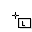 |
Il passo successivo consiste nel fare clic e trascinare il mouse per tracciare la cornice, proprio come per una cornice di testo. Per impostazione predefinita, Scribus mostra un messaggio di benvenuto, indicante almeno che la configurazione per LaTeX è corretta. Qui sotto è mostrato l'output fornito da LaTeX, rappresentato in Scribus. Il messaggio di benvenuto appare nella lingua dell'interfaccia utente selezionata in File > Preferenze; se non esiste una traduzione, sarà mostrata la versione inglese:
| 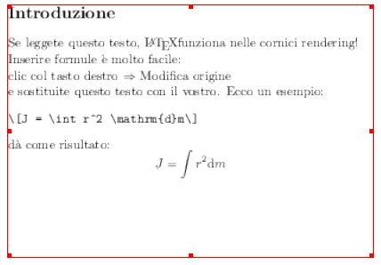 |
La schermata qui sopra ha la risoluzione predefinita di 72 DPI, che ovviamente è troppo bassa per la stampa. La risoluzione può essere modificata facilmente, come spiegheremo più avanti.
Se fate clic col tasto destro su una cornice rendering, il menù contestuale comprende una voce “Modifica origine:”
| 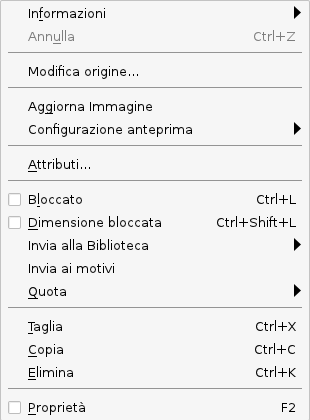 |
quando la selezionate, si apre il “cuore” della cornice rendering, l'editor:
| 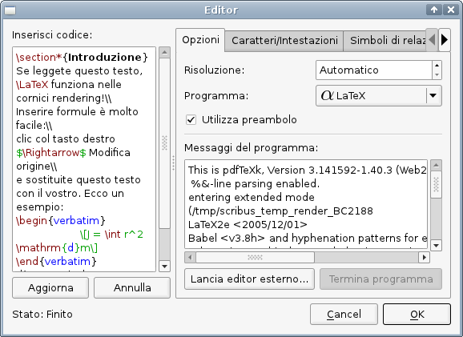 |
In Scribus 1.3.5 e successivi, l'editor è preconfigurato per utilizzare LaTeX, Lilypond, gnuplot, dot/GraphViz e POV-Ray.
A sinistra vi è un campo denominato “Inserisci codice”: qui potete inserire il codice per l'output che volete ottenere dal programma esterno. Per i programmi preconfigurati Scribus comprende dei frammenti di codice che vi permetteranno di verificare se essi sono installati e configurati correttamente. Come potete vedere, l'editor esegue anche l'evidenziazione della sintassi.
Il pulsante “Aggiorna” sotto il campo di testo aggiorna il contenuto della cornice rendering, e vi permette di controllare il risultato dei cambiamenti fatti al codice sorgente senza chiudere l'editor. “Annulla” annulla gli eventuali cambiamenti fatti. Tenete presente che, una volta iniziato a creare e modificare il testo, non è possibile cambiare il programma esterno usato per interpretarlo; quindi, ad esempio, se avete iniziato a lavorare su del codice sorgente LaTeX, non potete passare a Lilypond.
La parte destra della finestra contiene una serie di schede. Non tutte sono presenti per ciascuno dei programmi preconfigurati, e per alcuni di essi l'editor mostra soltanto la scheda “Opzioni”.
Nella scheda “Opzioni” la prima voce è “Risoluzione”. La sua impostazione predefinita è “Automatico”, che equivale a 72 DPI come spiegato sopra. Potete facilmente inserire un valore più adatto alla stampa.
“Programma” mostra l'elenco dei programmi esterni utilizzabili. L'editor elenca tutti i programmi configurati in File > Preferenze > Strumenti esterni.
Se contrassegnate “Utilizza preambolo” l'editor utilizzerà automaticamente il preambolo e il postambolo come indicato nei file XML di configurazione. Vedi sotto per altri dettagli.
“Messaggi del programma” mostra i messaggi che il programma esterno visualizzerebbe sulla linea di comando. Sono “intercettati” da Scribus, proprio come l'output del programma esterno, e possono essere utili per individuare le cause di eventuali errori se l'interpretazione del codice sorgente non riesce.
Con il pulsante “Lancia editor esterno” Scribus avvia l'editor esterno indicato in File > Preferenze, e “Termina programma” lo arresta. Questo può essere utile se il programma esterno incontra un errore nel codice che ne provoca il malfunzionamento o la chiusura inattesa.
| 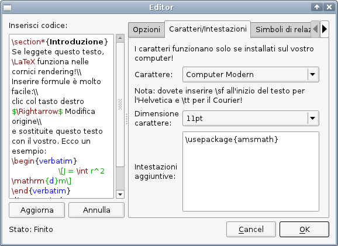 |
La prima scheda per LaTeX è “Caratteri/Intestazioni”. Nel menù a discesa superiore potete scegliere il tipo di carattere usato in una cornice rendering basata su LaTeX. Per impostazione predefinita l'elenco contiene solo quattro tipi di carattere, ma potete facilmente aggiungerne altri modificando il file XML di configurazione di LaTeX: basta che aggiungiate un altro tipo di carattere sotto <list name="font" default=""> nel file. Fate attenzione al fatto che l'elenco dei caratteri in LaTeX (e in molti altri programmi che usano un linguaggio di marcatura) è completamente diverso da quello dei caratteri disponibili in Scribus e in altri programmi, poiché LaTeX usa i propri caratteri, e necessita di essere configurato per poter usare i caratteri Type 1, TrueType e OpenType che trovate in programmi come Scribus o OpenOffice.org. Per maggiori informazioni sulla configurazione dei caratteri in LaTeX leggete la LaTeX Font Selection Guide (PDF).
Il menù a discesa sottostante permette di modificare la dimensione predefinita del carattere. Se siete abituati a LaTeX, saprete già che questa è l'impostazione per il carattere base; le altre dimensioni necessarie, ad esempio per apici e pedici, sono determinate da LaTeX. Noterete anche che l'editor elenca solo alcune possibili dimensioni per il carattere base. Potete aggiungere facilmente altre dimensioni in <list name="fontsize" default="11pt"> nel file XML di configurazione di LaTeX. Poiché non vi sono quasi limiti alle possibilità di configurazione per un file LaTeX, apprezzerete la possibilità di selezionare diversi file XML di configurazione in File > Preferenze > Strumenti esterni.
Il campo di testo “Intestazioni aggiuntive” permette di inserire intestazioni aggiuntive nel preambolo del codice LaTeX, che saranno salvate nel file .sla di Scribus.
Seguono alcune schede con simboli e caratteri che possono essere creati da LaTeX:
| 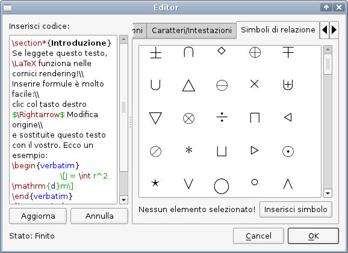 |
Per inserire un certo simbolo nel codice LaTeX, potete selezionarlo e fare clic su “Inserisci simbolo” oppure fare doppio clic sull'icona nel relativo campo.
Potete trovare maggiori informazioni su LaTeX nel sito ufficiale.
|
Per maggiori informazioni su Lilypond visitate il sito ufficiale.
| 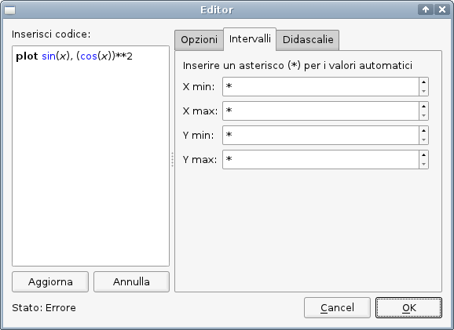 |
| 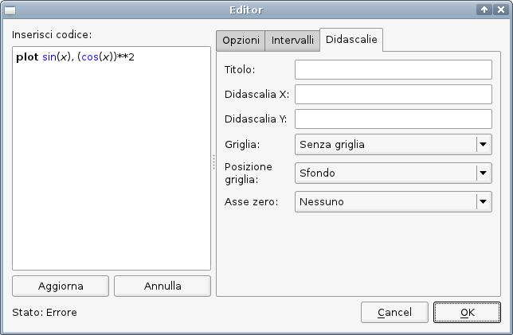 |
Per maggiori informazioni su gnuplot visitate il sito ufficiale.
Per maggiori informazioni su dot/Graphviz visitate il sito ufficiale di Graphviz.
| 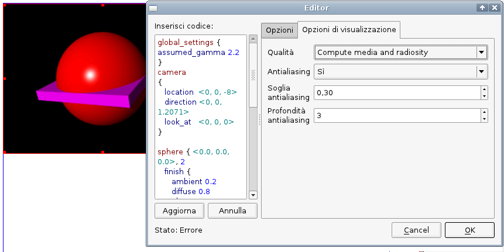 |
L'editor contiene soltanto una scheda con le opzioni per i file POV-Ray, che ha il titolo “Opzioni di visualizzazione”:"
Per maggiori informazioni su POV-Ray visitate il sito ufficiale.
Quando siete soddisfatti del codice che avete creato, premete il pulsante “OK”.
Se avete fatto qualche errore, e il programma esterno non riesce a interpretare il vostro codice, Scribus visualizza un messaggio di errore:
| 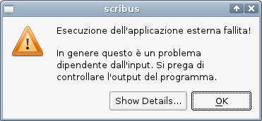 |
Una grande X blu e un messaggio di errore nella cornice rendering indicano che non è stato possibile visualizzare alcun contenuto:
| 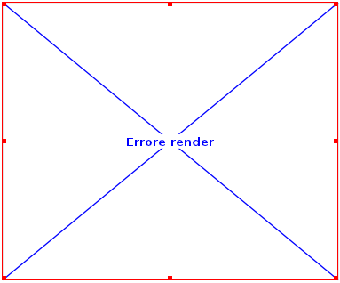 |
Se osservate il menù contestuale delle cornici rendering, avrete l'impressione che si tratti di cornici immagine. In un certo senso è così, poiché potete modificare le impostazioni di anteprima o aggiornare il contenuto. Ma c'è un'importante differenza: come detto prima, il codice da interpretare per creare il contenuto della cornice è salvato all'interno di un file di Scribus, e il contenuto rappresentato è sempre creato al momento. Quando aprite un file di Scribus che contiene una cornice rendering, Scribus lancia il particolare programma esterno che è necessario per creare l'immagine e crea un file immagine temporaneo che viene poi caricato nella cornice. Ecco perché le cornici rendering non compaiono in Utilità > Gestione immagini.
Questo modo di funzionare ha alcune conseguenze importanti. Un file di Scribus contenente immagini può essere spostato su un altro computer usando il comando File >Raggruppa per l'output e copiando l'archivio così prodotto sull'altra macchina. Ma se il documento contiene una cornice rendering, anche il software necessario per la cornice rendering deve essere presente sull'altra macchina. Inoltre, questo potrebbe non funzionare se i sistemi operativi sono diversi, perché le opzioni della linea di comando potrebbero essere diverse.
Un'altra limitazione consiste nel fatto che gli effetti immagine non sono applicabili alle cornici rendering.
Perché le cornici rendering funzionino, i programmi necessari devono essere installati sul vostro computer. Scribus è preconfigurato per cinque programmi, e cioè LaTeX, Lilypond, gnuplot, dot/Graphviz e POV-Ray. Su Linux il vostro gestore di pacchetti può provvedere all'installazione del software e di eventuali dipendenze. Su altre piattaforme può essere necessario installare i singoli programmi e modificare i loro file di configurazione.
Le opzioni di configurazione per le cornici rendering si trovano in File > Preferenze > Strumenti esterni, nella parte inferiore della finestra:
| 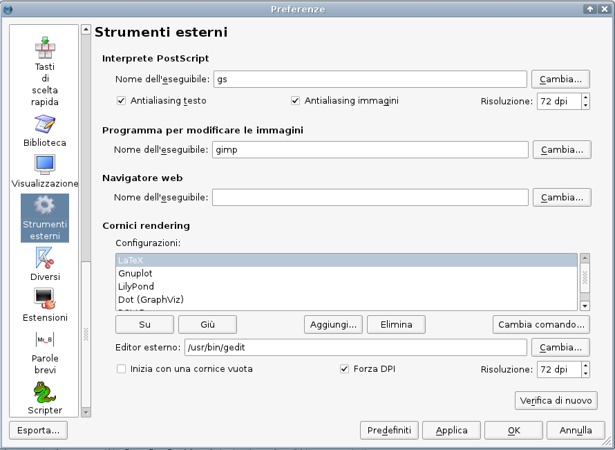 |
In “Configurazioni”, Scribus mostra i file di configurazione predefiniti. Ciascun programma utilizzabile dall'interno di Scribus ha bisogno di un apposito file di configurazione. Per aggiungere un nuovo programma da utilizzare con le cornici rendering dovete creare un file XML che contenga le impostazioni necessarie. Qui sotto mostriamo un file di configurazione di gnuplot, abbreviato e commentato, che può servire da esempio:
<editorsettings description="Gnuplot" icon="gnuplot.png"> Questa riga contiene la descrizione del programma e l'icona che viene mostrata nel menù a discesa dell'editor della cornice rendering. L'icona deve essere salvata nella stessa directory del file XML, e può essere in formato PNG, XPM o SVG.
<executable command="gnuplot"> Questa è la chiamata del programma da linea di comando. È possibile usare soltanto software che può funzionare da linea di comando; inoltre il programma deve essere in grado di fornire l'output in uno dei formati PNG, PDF o EPS. Per impostazione predefinita Scribus usa le opzioni della linea di comando per sistemi Linux/UNIX.
<imagefile extension=".png"/> Questa impostazione è usata dall'editor e contiene il formato di file generato dal programma esterno.
<highlighter> </highlighter> Questa parte interessa principalmente ai programmatori, e permette la creazione di schemi personalizzati di evidenziazione della sintassi usando espressioni regolari.
<empty-frame-text> Qui potete inserire un testo campione nel linguaggio di marcatura del programma che volete usare, ad esempio:
plot sin(x), (cos(x))**2
<preamble> Se il linguaggio di marcatura che volete usare richiede un preambolo, potete inserirlo qui. Non sarà mostrato nell'editor.
<postamble> Se il linguaggio di marcatura che volete usare richiede un postambolo, potete inserirlo qui. Non sarà mostrato nell'editor.
<tab type="settings"> Qui possono essere inserite le traduzioni per le stringhe della GUI esistenti; possono essere aggiunte anche nuove schede o altri elementi dell'interfaccia utente per mezzo di semplici voci in XML, ad esempio:
<title><i18n>
Per aggiungere un nuovo file di configurazione, premete il pulsante “Aggiungi”; si apre una finestra di dialogo in cui dovrete selezionare il file e premere “Apri”. Il file sarà aggiunto alla configurazione delle cornici rendering.
Spostando le voci dei file XML di configurazione più in alto o più in basso, potete cambiare l'ordine delle voci nel menù a discesa dell'editor. Se volete usare un diverso file XML di configurazione per un certo linguaggio di marcatura (ad esempio, se avete bisogno di un altro preambolo predefinito per cornici LaTeX in un certo progetto), potete cambiare il percorso verso il file alternativo facendo clic su “Cambia comando” oppure aggiungere il file alternativo con un nome opportuno come “MyLaTeX”.
| 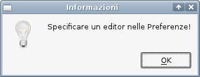 |
Inoltre, avete la possibilità di iniziare con una cornice vuota. Contrassegnando l'opzione “Forza DPI”, Scribus visualizza l'output di tutte le cornici rendering con la risoluzione impostata nella casella di controllo a destra. La risoluzione predefinita è impostata a 72 DPI per motivi di efficienza, ma se intendete creare un documento destinato alla stampa professionale, vi servirà una risoluzione maggiore.